Connect Teams users through chat in a secure way, no matter which account they are using
My Role
Lead designer for all chat and people scenarios on desktop feature team (covering for senior designer on maternity leave).
Collaborated with PM’s, engineers, researchers, and writers.
Background
Teams allows customers to chat with coworkers (Daniela and Aadi who both work at Contoso)
and with others at external organizations (Daniela can chat with Ray, who works at Fabrikam).
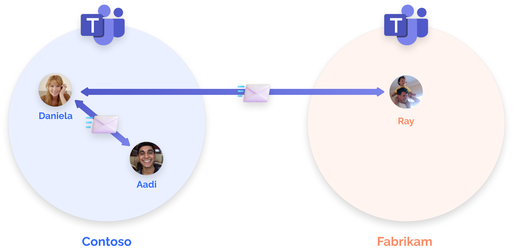
In 2020, Teams for personal use was released and allowed customers to chat and video call with friends, family, or anyone else using a personal account.
Microsoft then announced that Teams Chat for personal use would come pre-installed with the new Windows 11, with the potential to reach
over 1 billion existing Windows customers.
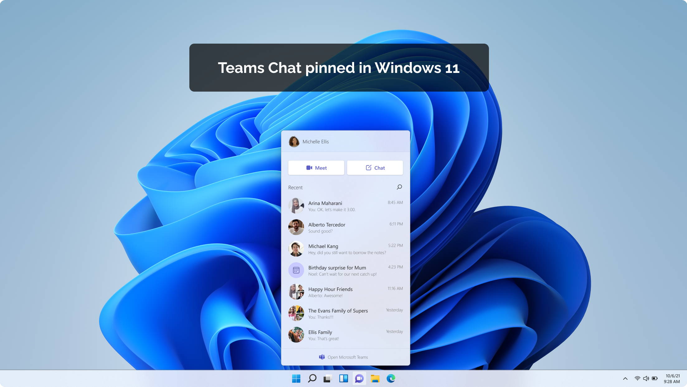
Problem
Before this project, Teams users on work accounts could only chat with others using work accounts,
and Teams personal accounts could only chat with other personal accounts.
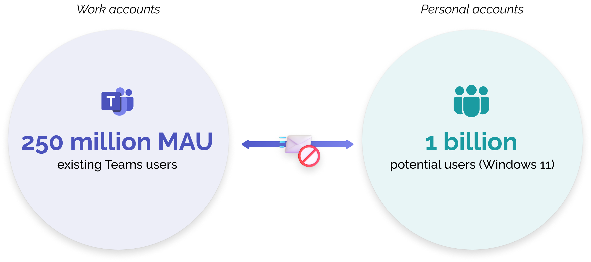
With the vast majority of existing Teams users on work accounts, we wanted to connect our existing user base of
250 million monthly active users (MAU) with potential personal accounts to help drive consumer adoption and value.
Opportunity
Build chat features between Teams work and personal accounts
We saw this project as a opportunity to
Help Teams users connect with anyone in the world, regardless of account type
Increase usage and adoption of Teams for personal use
This project would also enable several valuable chat scenarios for our existing customers including
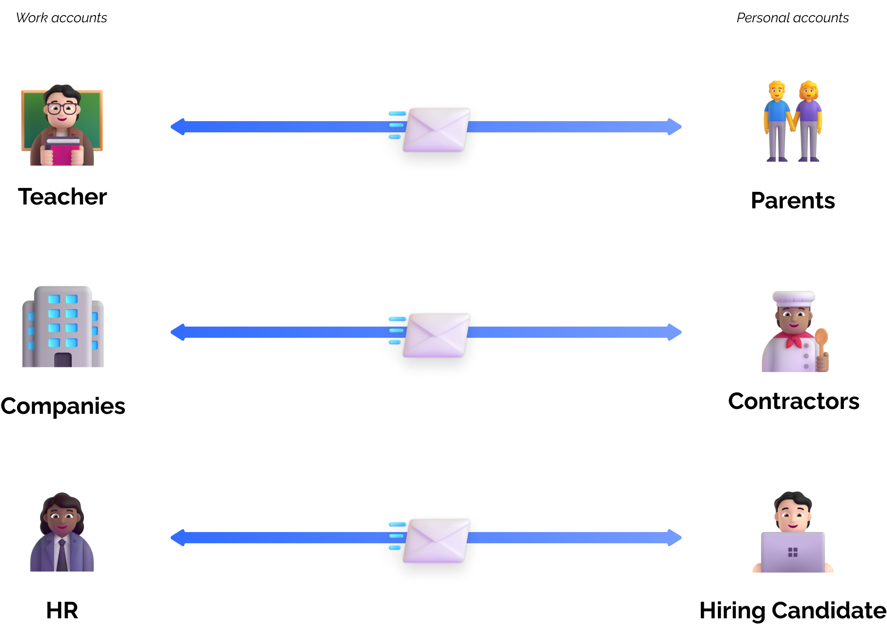
Design
As the lead designer on desktop for this feature, I had to build all of the various flows and their
complexities for Teams Connect Chat, while balancing simplicty and alignment across existing chat patterns.
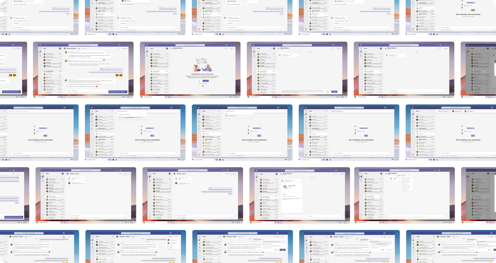
Hundreds of screens!
Design challenges
#1. How might we align and consolidate chat headers to account for new scenarios?
As our work connected users to new account “types” and scenarios, we needed to revisit our chat header patterns.
Before
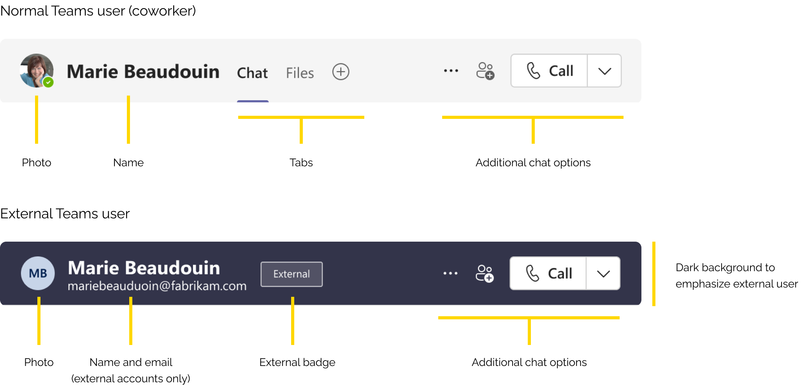
Problems
Dark background color is also used for active meeting chats or ongoing calls
External badge location would change based on length of name/email
Cannot show personal account email (privacy restriction)
Additional disclaimers required by security & privacy team
Proposal
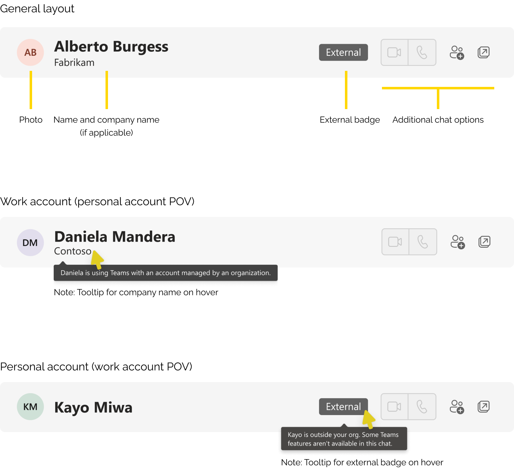
Through this proposal, we were able to
Clarify background color patterns by reserving dark background for active meeting/call scenarios
Place External badge in a predictable location in header
Leverage company name to help identify chat user
Use tooltips on hover for disclaimer text to keep header clean
#2. How might we help users feel secure when chatting with new people?
Even with our auto-spam detection, account verification, and IT admin controls, we wanted to take additional steps in the UX to help our chat users feel secure.
When receiving a new message from a user who is outside your organization or not a trusted contact, we designed a “safety” screen which gave three options:
Accept - add user as a “trusted contact,” and chat normally
Block - block all chat and other communications from this user
Preview - give preview of messages, then prompt accept/block again
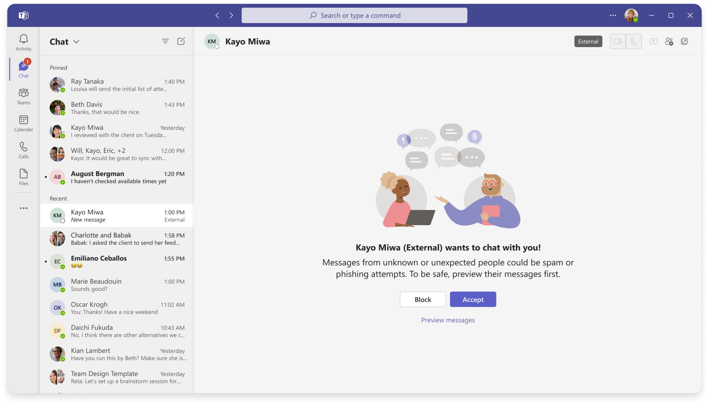
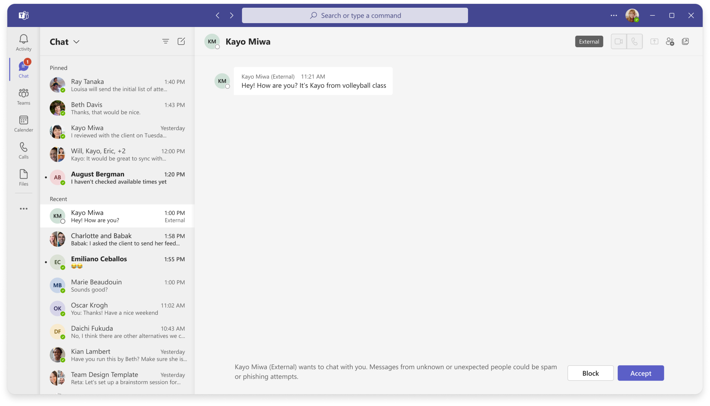
Previewing messages from new user
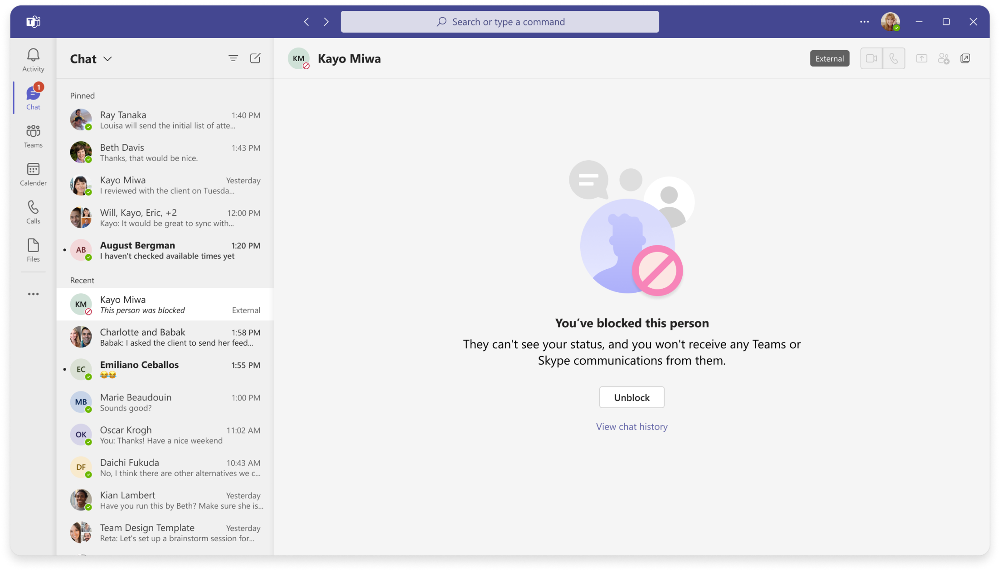
After blocking a user
We also worked with our IT admin and chat services teams to
Allow admins to easily turn off Teams Connect Chat, or limit chat based on select organizations or Teams accounts
Limit number of messages (10) you can send to a new user without a response
#3. How might we simplify the experience of inviting others to chat on Teams?
When starting a new chat invite via email or SMS, we discovered that our existing framework and
patterns would overwhelm the user with multiple banners.
Before
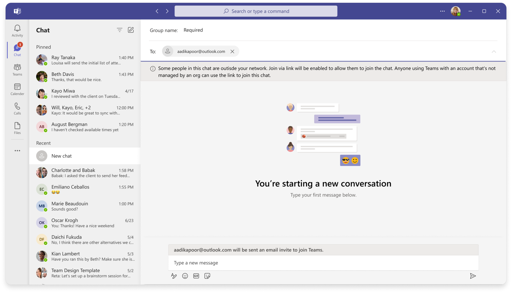
Proposal
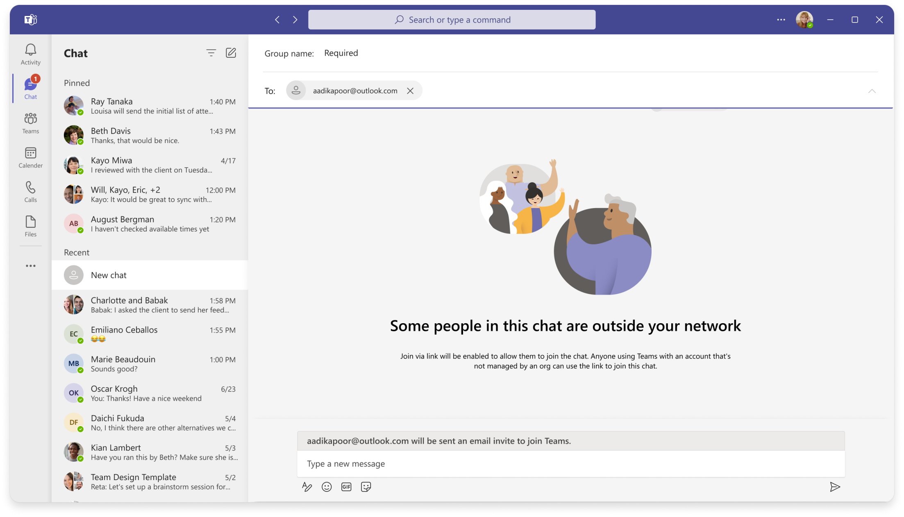
By incorporating the long disclaimer into the chat empty state, we can reduce the number of banners
and highlight a “new” chat experience through the illustration.
Validation
We ran three different sessions of user testing and flash feedback through our design process, testing with Figma prototypes.
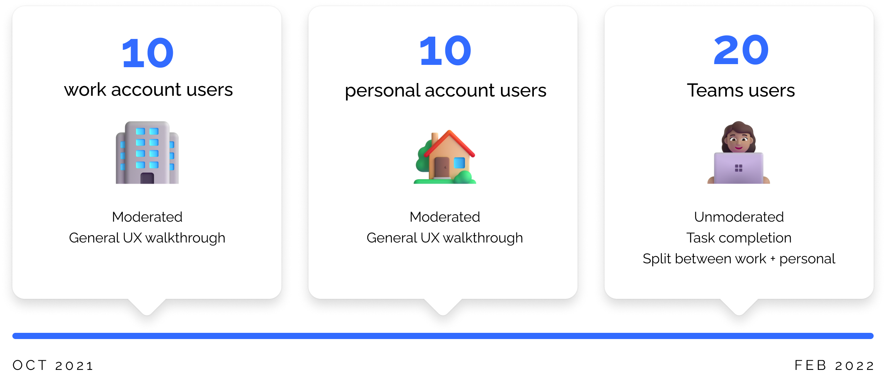
“Everything made sense to me. It’s very clear what’s going on and how to use these features.”
TEAMS WORK USER, INDIA
“Spam would be very annoying, so I’m glad it’s easy to preview and block.”
TEAMS WORK USER, USA
“I would definitely chat with my husband who uses Teams for his job!”
TEAMS PERSONAL USER, BRAZIL
Outcome
Microsoft Teams announced the Teams Connect Chat feature during its annual Ignite Conference in 2021.
The feature has now rolled out succesfully to the majority of our public users and organizations (with IT admin permissioning)
As of 2022, Teams Connect Chat has hundreds of thousands of monthly active users, and millions of messages are sent across work and personal accounts each month.
Teams Connect Chat has also enabled several other key investments from the Teams organization, including Parent Connection, SMB (small and medium-sized business)
plans, and the Teams Chat pinned app in Windows 11.